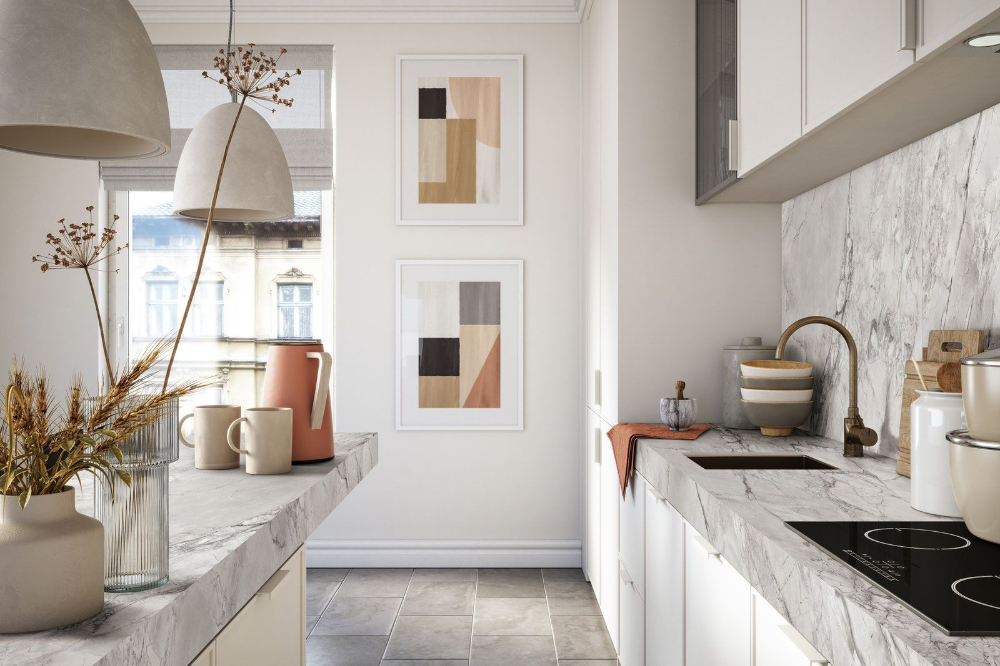
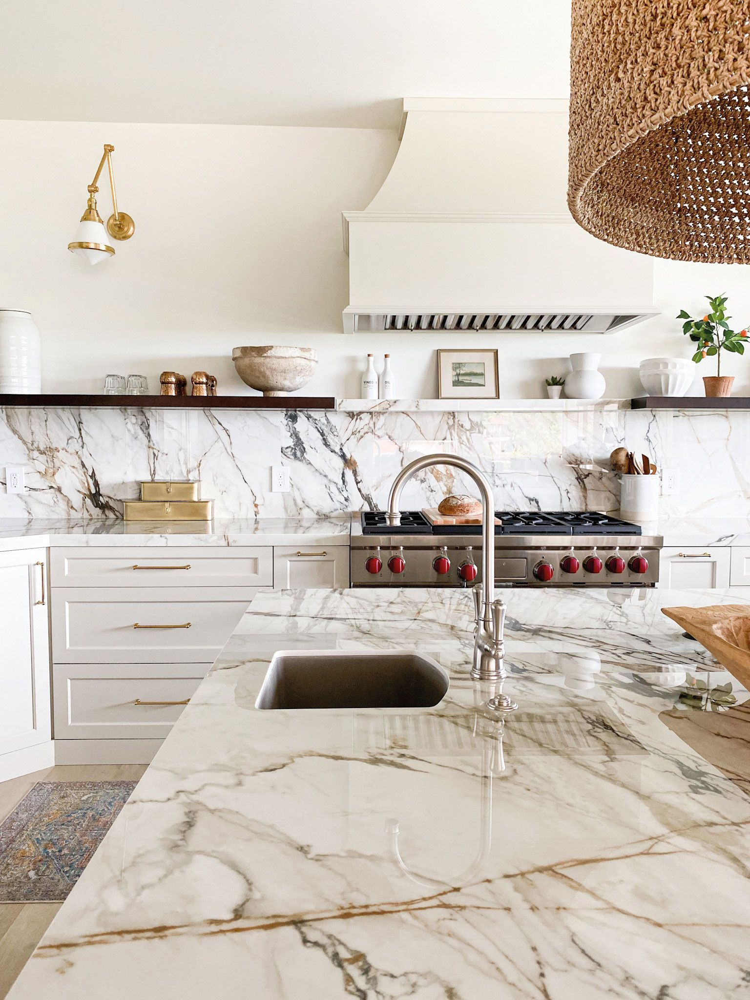
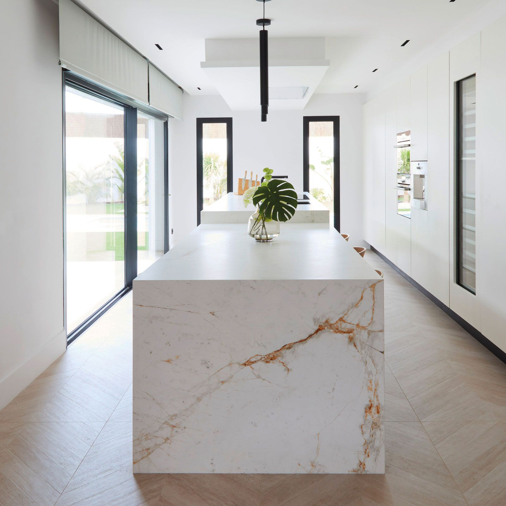
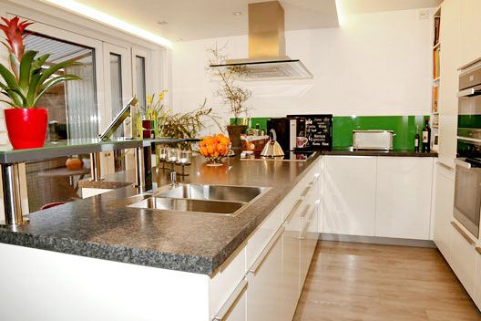
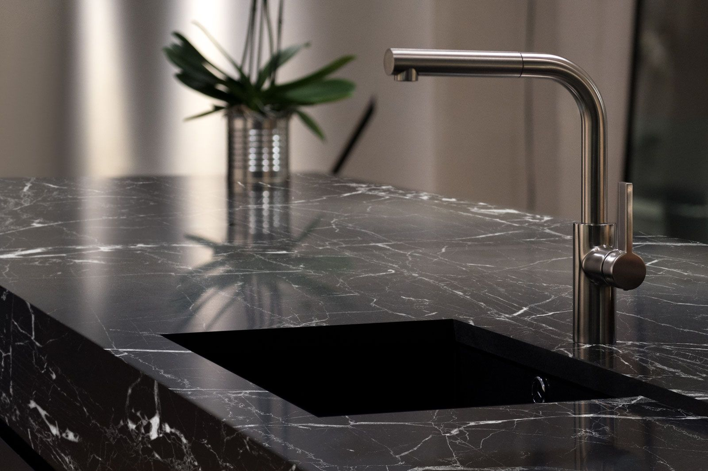
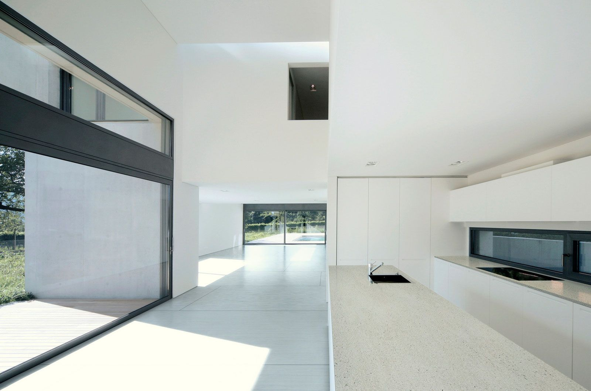
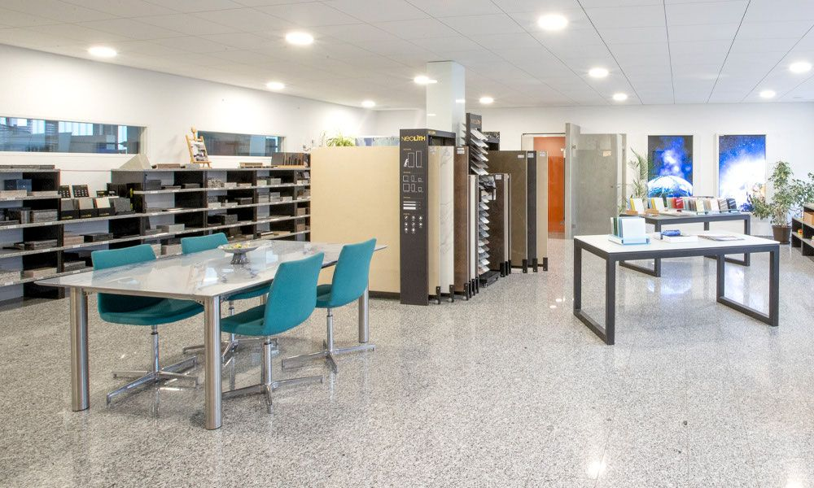
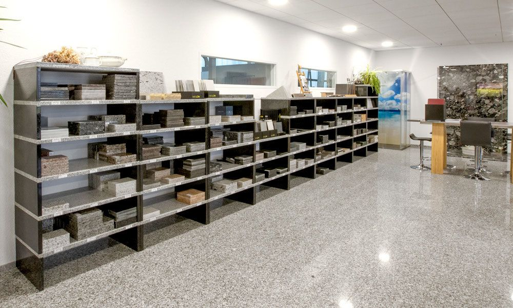
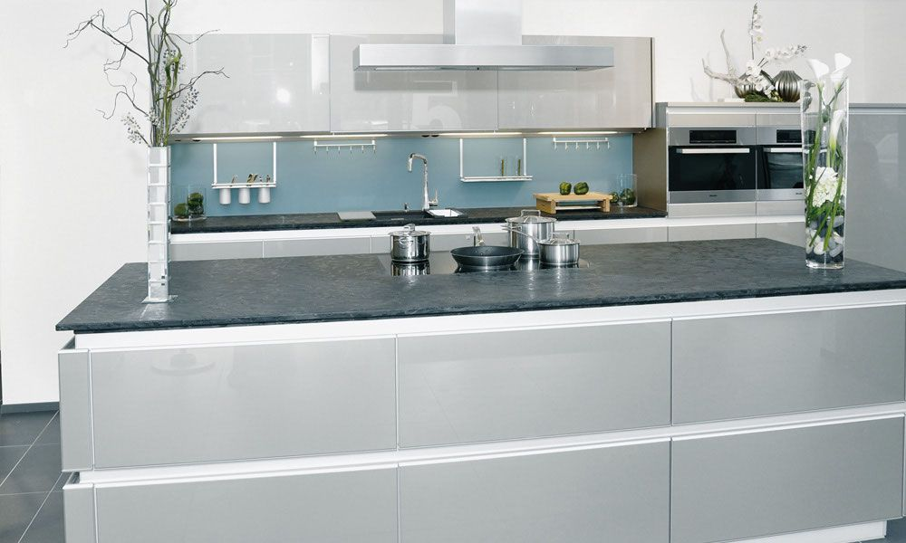
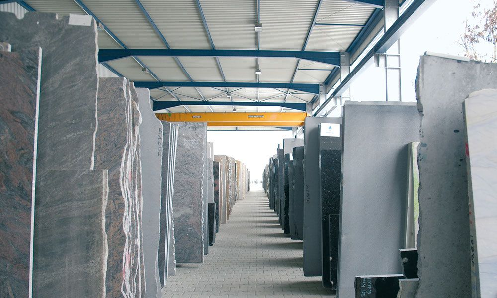

Hochwertige Natursteinarbeiten aus Altbach
Die Eberhard Bäder Natursteine und Glas GmbH ist Ihr Partner für Natursteinarbeiten in Altbach, Esslingen, Stuttgart und dem Baden-Württembergischen Raum.
Natursteinarbeiten und Glasprodukte aus Altbach bei Esslingen
Überzeugen Sie sich und Ihre Familie von den faszinierenden Elementen Stein, Keramik und Glas – Sie werden sehen, dass Sie deren Schönheit und Komfort garantiert nicht mehr missen möchten!
An unserem Standort in Altbach, ganz in der Nähe von Esslingen, verarbeiten wir sowohl Natursteine wie Granit, Quarzkomposit (Silestone), Keramik, Marmor als auch Glas. Unsere Glas- und Natursteinarbeiten finden Anwendung in den unterschiedlichsten Innen- und Außenbereichen, zum Beispiel als:
- Küchenarbeitsplatte oder Tischplatte
- Waschtischplatte oder Duschtrennwand im Bad
- Wandverkleidung
- Terrassenplatte
- Treppe und Bodenplatte
- Fenstersims

Persönliche Beratung in unserem Haus
Egal, ob es um die Erneuerung Ihrer Küche durch eine Naturstein- oder Glasarbeitsplatte geht, um die Modernisierung Ihres Bades oder um eine Neugestaltung Ihrer Wohnräume – über die vielfältigen Einsatzmöglichkeiten von Naturstein und Glas beraten wir Sie gerne individuell in unserem Hause in Altbach bei Esslingen.
In unserem Ausstellungsraum erhalten Sie einen ersten Eindruck von unseren Natursteinarbeiten. Gerne können Sie sich von allen vorrätigen Materialien aus Stein, Glas, Silestone und Keramik ein passendes Muster für zu Hause mitnehmen und so vor Ort ausprobieren, ob das ausgewählte Material beispielsweise mit Ihrem Fußboden, Ihren Möbeln oder Wohn-Accessoires harmoniert.
Schauen Sie gerne bei uns vorbei oder kontaktieren Sie uns für weitere Informationen!

Für jeden Anspruch das passende Material
Naturstein, Quarz, Keramik und Glas – alles aus einer Hand, gefertigt in Altbach.

Naturstein
Granit, Marmor und mehr – über 70 Sorten aus aller Welt am Lager.
Mehr erfahren
Silestone
Quarzoberfläche mit bis zu 94 % Naturquarz und Hygieneschutz.
Mehr erfahren
Lightstone
Quarzkomposit in 12 mm – exklusiv bei uns in Altbach.
Mehr erfahren
Neolith Keramik
Hightech-Keramik: kratz-, hitze- und UV-beständig.
Mehr erfahren
Dekton
Ultrakompakte Oberfläche aus Glas, Keramik und Quarz.
Mehr erfahren
Laminam
Keramikplatten, bei denen jede Oberfläche ein Unikat ist.
Mehr erfahrenNatur- oder Steinplatten direkt vom Hersteller!








Erstklassige Glasprodukte aus Altbach
Die Glas-Alternative: Die Individualität nahezu ohne Grenzen Ihrer Kreativität
VETROPLAN ist eine Marke aus unserem Hause und Ihr Partner für Nischenrückfronten aus Glas. Überzeugen Sie sich und Ihre Familie von dem faszinierenden Element Glas – Sie werden sehen, dass Sie auf dessen Schönheit und Komfort nicht mehr verzichten möchten.
LED-Lichtfelder aus Glas für ein entspanntes Wohngefühl in Küche oder Bad
CULINA LUCE ist unsere Marke, wenn es um LED-Lichtfelder für unterschiedlichste Anwendungsbereiche geht. Von Küchenrückwänden über Wand- und Badfelder bis hin zu Küchenarbeitsplatten oder ganz individuellen Anfertigungen – beleuchtet oder unbeleuchtet.
Wir liefern in folgende Regionen in Süddeutschland
Natursteine, Steine und Glas nach
- Heidelberg
- Schwetzingen
- Mannheim
- Wiesloch
- Mosbach
- Wertheim
- Schwäbisch Hall
- Bretten
oder Steine auch nach
- Bretten
- Bietigheim
- Bruchsal
- Freudenstadt
- Nagold
- Heilbronn
- Neckarsulm
- Eppingen
oder unsere Natursteine nach
- Bad Rappenau
- Pforzheim
- Sindelfingen
- Böblingen
- Fellbach
- Ludwigsburg
- Ellwangen
- Aalen
- Schwäbisch Gmünd
oder unsere Küchenarbeitsplatten nach
- Reutlingen
- Tübingen
- Rottweil
- Göppingen
- Lörrach
- Singen
- Ravensburg
Lassen Sie sich beraten
Besuchen Sie unsere Ausstellung in Altbach oder rufen Sie uns an – wir beraten Sie gerne persönlich.